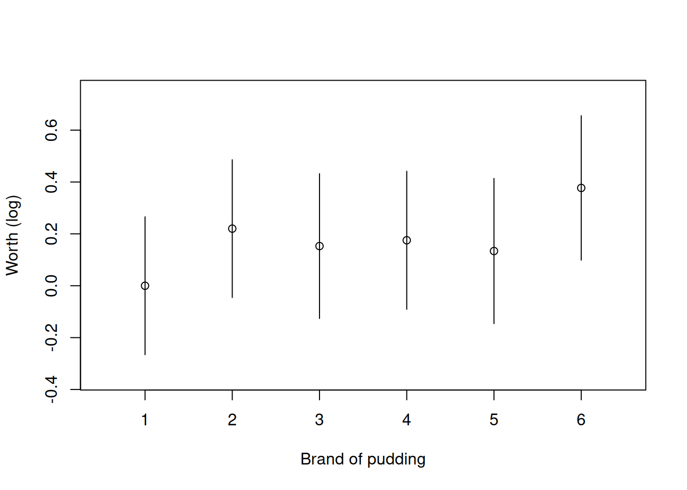
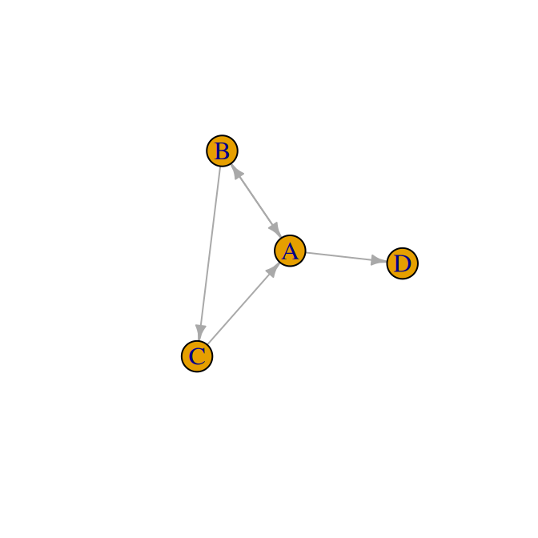
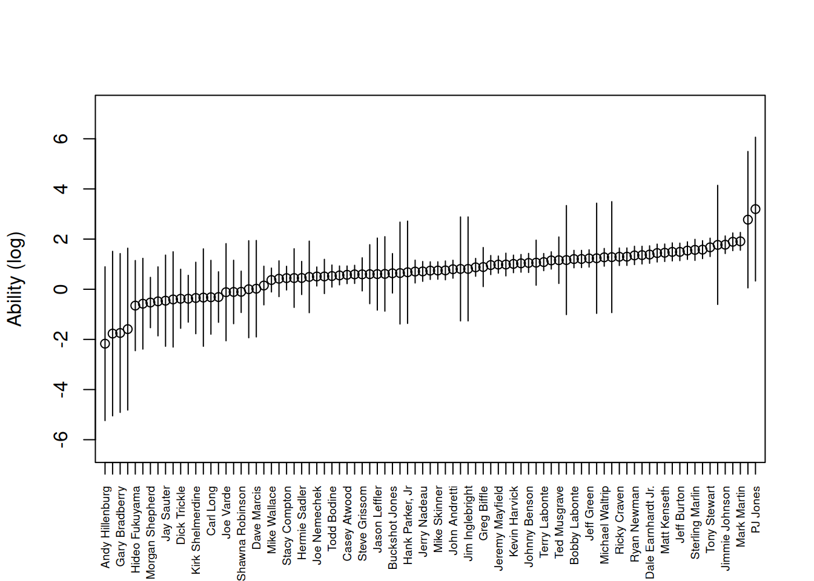
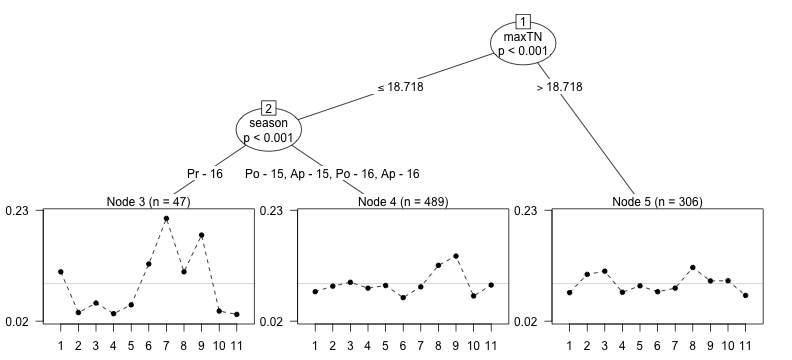

Introduction to PlackettLuce
Heather Turner
Department of Statistics, University of Warwick, UKJacob van Etten
Bioversity International, Costa RicaDavid Firth
Department of Statistics, University of Warwick, UK; and Alan Turing Institute, London, UKIoannis Kosmidis
Department of Statistical Science, UCL, UK; and Alan Turing Institute, London, UKSource:
vignettes/Overview.Rmd
Overview.RmdAbstract
The PlackettLuce package implements a generalization of the model jointly attributed to Plackett (1975) and Luce (1959) for modelling rankings data. The generalization accommodates both ties (of any order) and partial rankings (complete rankings of only some items). By default, the implementation adds a set of pseudo-rankings with a hypothetical item, ensuring that the network of wins and losses is always strongly connected, i.e. all items are connected to every other item by both a path of wins and a path of losses. This means that the worth of each item is always estimable with finite standard error. It also has a regularization effect, shrinking the estimated parameters towards equal item worth. In addition to standard methods for model summary, PlackettLuce provides a method to estimate quasi-standard errors for the item parameters, so that comparison intervals can be derived even when a reference item is set. Finally the package provides a method for model-based partitioning using ranking-specific covariates, enabling the identification of subgroups where items have been ranked differently.
1 Introduction
Rankings data, in which each observation is an ordering of a set of items, arises in a range of applications, for example sports tournaments and consumer studies. A classic model for such data is the Plackett-Luce model. This model depends on Luce’s axiom of choice (Luce 1959, 1977) which states that the odds of choosing an item over another do not depend on the set of items from which the choice is made. Suppose we have a set of \(J\) items
\[S = \{i_1, i_2, \ldots, i_J\}.\]
Then under Luce’s axiom, the probability of selecting some item \(j\) from \(S\) is given by
\[P(j | S) = \frac{\alpha_{j}}{\sum_{i \in S} \alpha_i}\]
where \(\alpha_i\) represents the worth of item \(i\). Viewing a ranking of \(J\) items as a sequence of choices — first choosing the top-ranked item from all items, then choosing the second-ranked item from the remaining items and so on — it follows that the probability of the ranking \({i_1 \succ \ldots \succ i_J}\) is
\[\prod_{j=1}^J \frac{\alpha_{i_j}}{\sum_{i \in A_j} \alpha_i}\]
where \(A_j\) is the set of alternatives \(\{i_j, i_{j + 1}, \ldots, i_J\}\) from which item \(i_j\) is chosen. The above model is also derived in Plackett (1975), hence the name Plackett-Luce model.
The PlackettLuce package implements a novel extension of the Plackett-Luce model that accommodates tied rankings, which may be applied to either full or partial rankings. Pseudo-rankings are utilised to obtain estimates in cases where the maximum likelihood estimates do not exist, or do not have finite standard errors. Methods are provided to obtain different parameterizations with corresponding standard errors or quasi-standard errors (that are independent of parameter constraints). There is also a method to work with the psychotree package to fit Plackett-Luce trees.
1.1 Comparison with other packages
Even though the Plackett-Luce model is a well-established method for analysing
rankings, the software available to fit the model is limited. By considering
each choice in the ranking as a multinomial observation, with one item observed
out of a possible set, the “Poisson trick” (see, for example, Baker 1994) can be
applied to express the model as a log-linear model, where the response is the
count (one or zero) of each possible outcome within each choice. In principle, the
model can then be fitted using standard software for generalized linear
models. However there are a number of difficulties with this. Firstly, dummy
variables must be set up to represent the presence or absence of each item in
each choice and a factor created to identify each choice, which is a
non-standard task. Secondly the factor identifying each choice will have many
levels: greater than the number of rankings, for rankings of more than two
objects. Thus there are many parameters to estimate and a standard function such
as glm will be slow to fit the model, or may even fail as the corresponding
model matrix will be too large to fit in memory. This issue can be circumvented
by using the gnm function from gnm, which provides an eliminate argument
to efficiently estimate the effects of such a factor. Even then, the
model-fitting may be relatively slow, given the expansion in the number of
observations when rankings are converted to counts. For example, the ranking {item
3 \(\prec\) item 1 \(\prec\) item 2} expands to two choices with five counts all
together:
## choice item 1 item 2 item 3 count
## [1,] 1 1 0 0 0
## [2,] 1 0 1 0 0
## [3,] 1 0 0 1 1
## [4,] 2 1 0 0 1
## [5,] 2 0 1 0 0It is possible to aggregate observations of the same choice from the same set of alternatives, but the number of combinations increases quickly with the number of items.
Given the issues with applying general methods, custom algorithms and software have been developed. One approach is using Hunter’s (2004) minorization-maximization (MM) algorithm to maximize the likelihood, which is equivalent to an iterative scaling algorithm; this algorithm is used by the StatRank package. Alternatively the likelihood of the observed data under the PlackettLuce model can be maximised directly using a generic optimisation method such the Broyden–Fletcher–Goldfarb–Shanno (BFGS) algorithm, as is done by the pmr and hyper2 packages. Finally, Bayesian methods can be used to either maximize the posterior distribution via an Expectation Maximization (EM) algorithm or to simulate the posterior distribution using Markov-chain Monte-Carlo (MCMC) techniques, both of which are provided by PLMIX. PlackettLuce offers both iterative scaling and generic optimization using either BFGS or a limited memory variant (L-BFGS) via the lbfgs package.
Even some of these specialized implementations can scale poorly with the number
of items and/or the number of rankings as shown by the example timings in Table
2. Specifically pmr::pl becomes impractical to use with
a moderate number of items (~10), while the functions from hyper2 and
StatRank take much longer to run with a large number (1000s) of unique
rankings. PlackettLuce copes well with these moderately-sized data sets,
though is not quite as fast as PLMIX when both the number of items and the
number of unique rankings is large.
| Rankings | Unique rankings | Items | |
|---|---|---|---|
| Netflix | 1256 | 24 | 4 |
| T-shirt | 30 | 30 | 11 |
| Sushi | 5000 | 4926 | 10 |
| PlackettLuce | hyper2 | PLMIX | pmr | StatRank | |
|---|---|---|---|---|---|
| Netflix | 0.008 | 0.676 | 0.316 | 0.218 | 0.153 |
| T-shirt | 0.049 | 3.105 | 0.005 | a | 5.149 |
| Sushi | 0.683 | 670.51 | 0.081 | a | 9.362 |
| a Function fails to complete. |
As the number of items increases, it is typically more common to observe partial rankings than complete rankings. Partial rankings can be of two types: sub-rankings, where only a subset of items are ranked each time, and incomplete rankings, where the top \(n\) items are selected and the remaining items are unranked, but implicitly ranked lower than the top \(n\). PlackettLuce handles sub-rankings only, while PLMIX handles incomplete rankings only and hyper2 can handle both types. StatRank seems to support partial rankings, but the extent of this support is not clear. The timings in Table 3 for fitting the Plackett-Luce model on the NASCAR data from Hunter (2004) illustrate that PlackettLuce is more efficient than hyper2 for modelling sub-rankings of a relatively large number of items.
| Rankings | Items | Items per ranking | PlackettLuce | hyper2 |
|---|---|---|---|---|
| 36 | 83 | 42-43 | 0.065 | 127.317 |
PlackettLuce is the only package out of those based on maximum likelihood estimation with the functionality to compute standard errors for the item parameters and thereby the facility to conduct inference about these parameters. PLMIX allows for inference based on the posterior distribution. In some cases, when the network of wins and losses is disconnected or weakly connected, the maximum likelihood estimate does not exist, or has infinite standard error; such issues are handled in PlackettLuce by utilising pseudo-rankings. This is similar to incorporating prior information as in the Bayesian approach.
PlackettLuce is also the only package that can accommodate tied rankings, through a novel extension of the Plackett-Luce model. On the other hand hyper2 is currently the only package that can handle rankings of combinations of items, for example team rankings in sports. PLMIX offers the facility to model heterogeneous populations of subjects that have different sets of worth parameters via mixture models. This is similar in spirit to the model-based partitioning offered by PlackettLuce, except here the sub-populations are defined by binary splits on subject attributes. A summary of the features of the various packages for Plackett-Luce models is given in Table 4.
| Feature | PlackettLuce | hyper2 | pmr | StatRank | PLMIX |
|---|---|---|---|---|---|
| Inference | Frequentist | No | No | No | Bayesian |
| Disconnected networks | Yes | No | No | No | Yes |
| Ties | Yes | No | No | No | No |
| Teams | No | Yes | No | No | No |
| Heterogenous case | Trees | No | No | No | Mixtures |
2 Methods
2.1 Extended Plackett-Luce model
The PlackettLuce package permits rankings of the form
\[R = \{C_1, C_2, \ldots, C_J\}\]
where the items in set \(C_1\) are ranked higher than (better than) the items in \(C_2\), and so on. If there are multiple objects in set \(C_j\) these items are tied in the ranking. For a set \(S\), let
\[f(S) = \delta_{|S|} \left(\prod_{i \in S} \alpha_i \right)^\frac{1}{|S|}\]
where \(|S|\) is the cardinality of the set \(S\), \(\delta_n\) is a parameter representing the prevalence of ties of order \(n\) (with \(\delta_1 \equiv 1\)), and \(\alpha_i\) is a parameter representing the worth of item \(i\). Then under an extension of the Plackett-Luce model allowing ties up to order \(D\), the probability of the ranking \(R\) is given by
\[\begin{equation} \prod_{j = 1}^J \frac{f(C_j)}{ \sum_{k = 1}^{\min(D_j, D)} \sum_{S \in {A_j \choose k}} f(S)} \tag{1} \end{equation}\]
where \(D_j\) is the cardinality of \(A_j\), the set of alternatives from which \(C_j\) is chosen, and \(A_j \choose k\) is all the possible choices of \(k\) items from \(A_j\). The value of \(D\) can be set to the maximum number of tied items observed in the data, so that \(\delta_n = 0\) for \(n > D\).
When the worth parameters are constrained to sum to one, they represent the probability that the corresponding item comes first in a ranking of all items, given that first place is not tied.
The 2-way tie prevalence parameter \(\delta_2\) is interpretable via the probability that two given items of equal worth tie for first place, given that the first place is not a 3-way or higher tie. Specifically, that probability is \(\delta_2/(2 + \delta_2)\).
The 3-way and higher tie-prevalence parameters are interpretable similarly, in terms of tie probabilities among equal-worth items.
When intermediate tie orders are not observed (e.g. ties of order 2 and order 4 are observed, but no ties of order 3), the maximum likelihood estimate of the corresponding tie prevalence parameters is zero, so these parameters are excluded from the model.
2.1.1 Pudding example (with ties)
When each ranking contains only two items, then the model in Equation
(1) reduces to extended Bradley-Terry model proposed by
Davidson (1970) for paired comparisons with ties. The pudding data set,
available in PlackettLuce, provides the data from Example 2 of that paper, in
which respondents were asked to test two brands of chocolate pudding from a
total of six brands. For each pair of brands \(i\) and \(j\), the data set
gives the frequencies that brand \(i\) was preferred (\(w_{ij}\)), that brand \(j\)
was preferred (\(w_{ji}\)) and that the brands were tied (\(t_{ij}\)).
library(PlackettLuce)
head(pudding)## i j r_ij w_ij w_ji t_ij
## 1 1 2 57 19 22 16
## 2 1 3 47 16 19 12
## 3 2 3 48 19 19 10
## 4 1 4 54 18 23 13
## 5 2 4 51 23 19 9
## 6 3 4 54 19 20 15PlackettLuce, the model-fitting function in PlackettLuce, requires data in the form of
rankings, with the rank (1st, 2nd, 3rd, \(\ldots\)) for each item. In this case it is
more straight-forward to define the orderings (winner, loser) initially,
corresponding to the wins for item \(i\), the wins for item \(j\) and the ties:
i_wins <- data.frame(Winner = pudding$i, Loser = pudding$j)
j_wins <- data.frame(Winner = pudding$j, Loser = pudding$i)
if (getRversion() < "3.6.0"){
n <- nrow(pudding)
ties <- data.frame(Winner = array(split(pudding[c("i", "j")], 1:n), n),
Loser = rep(NA, 15))
} else {
ties <- data.frame(Winner = asplit(pudding[c("i", "j")], 1),
Loser = rep(NA, 15))
}
head(ties, 2)## Winner Loser
## 1 1, 2 NA
## 2 1, 3 NAIn the last case, we split the i and j columns of pudding by row, using
the base R function asplit, if available. For each pair, this gives a vector
of items that we can specify as the winner, while the loser is missing.
Now the as.rankings() function from PlackettLuce can be used to convert
the combined orderings to an object of class "rankings".
R <- as.rankings(rbind(i_wins, j_wins, ties),
input = "orderings")
head(R, 2)## [1] "1 > 2" "1 > 3"
tail(R, 2)## [1] "4 = 6" "5 = 6"The print method displays the rankings in a readable form, however the underlying data structure stores the rankings in the form of a matrix:
## 1 2 3 4 5 6
## [1,] 1 2 0 0 0 0
## [2,] 1 0 2 0 0 0The six columns represent the pudding brands. In each row, 0 represents an
unranked brand (not in the comparison), 1 represents the brand(s) ranked
in first place and 2 represents the brand in second place, if applicable.
To specify the full set of rankings, we need the frequency of each ranking, which will be specified to the model-fitting function as a weight vector:
Now we can fit the model with PlackettLuce, passing the rankings object
and the weight vector as arguments. Setting npseudo = 0 means that standard
maximum likelihood estimation is performed and maxit = 7 limits the number of
iterations to obtain the same worth parameters as Davidson (1970):
mod <- PlackettLuce(R, weights = w, npseudo = 0, maxit = 7)## Warning in PlackettLuce(R, weights = w, npseudo = 0, maxit = 7): Iterations
## have not converged.
coef(mod, log = FALSE)## 1 2 3 4 5 6 tie2
## 0.1388005 0.1729985 0.1617420 0.1653930 0.1586805 0.2023855 0.7468147Note here that we have specified log = FALSE in order to report the estimates
in the parameterization of Equation (1). In the next section we
discuss why it is more appropriate to use the log scale for inference.
2.2 Inference
A standard way to report model parameter estimates is to report them along with their corresponding standard error. This is an indication of the estimate’s precision, however implicitly this invites comparison with zero. Such comparison is made explicit in many summary methods for models in R, with the addition of partial t or Z tests testing the null hypothesis that the parameter is equal to zero, given the other parameters in the model. However this hypothesis is generally not of interest for the worth parameters in a Plackett-Luce model: we expect most items to have some worth, the question is whether the items differ in their worth. In addition, a Z test based on asymptotic normality of the maximum likelihood estimate will not be appropriate for worth parameters near zero or one, since it does not take account of the fact that the parameters cannot be outside of these limits.
On the log scale however, there are no bounds on the parameters and we can set
a reference level to provide meaningful comparisons. By default, the summary
method for "PlackettLuce" objects sets the first item (the first element of
colnames(R)) as the reference:
summary(mod)## Call: PlackettLuce(rankings = R, npseudo = 0, weights = w, maxit = 7)
##
## Coefficients:
## Estimate Std. Error z value Pr(>|z|)
## 1 0.0000 NA NA NA
## 2 0.2202 0.1872 1.176 0.239429
## 3 0.1530 0.1935 0.790 0.429271
## 4 0.1753 0.1882 0.931 0.351683
## 5 0.1339 0.1927 0.695 0.487298
## 6 0.3771 0.1924 1.960 0.049983 *
## tie2 -0.2919 0.0825 -3.539 0.000402 ***
## ---
## Signif. codes: 0 '***' 0.001 '**' 0.01 '*' 0.05 '.' 0.1 ' ' 1
##
## Residual deviance: 1619.4 on 1484 degrees of freedom
## AIC: 1631.4
## Number of iterations: 7None of the Z tests for the item parameters provides significant evidence against the null hypothesis of no difference from the worth of item 1, which is consistent with the test for equal preferences presented in Davidson (1970). The tie parameter is also shown on the log scale here, but it is an integral part of the model rather than a parameter of interest for inference, and its scale is not as relevant as that of the worth parameters.
The reference level for the item parameters can be changed via the ref
argument, for example setting to NULL sets the mean worth as the reference:
summary(mod, ref = NULL)## Call: PlackettLuce(rankings = R, npseudo = 0, weights = w, maxit = 7)
##
## Coefficients:
## Estimate Std. Error z value Pr(>|z|)
## 1 -0.176581 0.121949 -1.448 0.147619
## 2 0.043664 0.121818 0.358 0.720019
## 3 -0.023617 0.126823 -0.186 0.852274
## 4 -0.001295 0.122003 -0.011 0.991533
## 5 -0.042726 0.127054 -0.336 0.736657
## 6 0.200555 0.126594 1.584 0.113140
## tie2 -0.291938 0.082499 -3.539 0.000402 ***
## ---
## Signif. codes: 0 '***' 0.001 '**' 0.01 '*' 0.05 '.' 0.1 ' ' 1
##
## Residual deviance: 1619.4 on 1484 degrees of freedom
## AIC: 1631.4
## Number of iterations: 7As can be seen from the output above, the standard error of the item parameters changes with the reference level. Therefore in cases where there is not a natural reference (like for example in comparisons of own brand versus competitor’s brands), inference can depend on an arbitrary choice. This problem can be handled through the use of quasi standard errors that remain constant for a given item regardless of the reference. In addition quasi standard errors are defined for the reference item, so even in cases where there is a natural reference, the uncertainty around the worth of that item can still be represented.
Quasi standard errors for the item parameters are implemented via a method for
the qvcalc function from the qvcalc package:
## Model call: PlackettLuce(rankings = R, npseudo = 0, weights = w, maxit = 7)
## estimate SE quasiSE quasiVar
## 1 0.0000000 0.0000000 0.1328950 0.01766108
## 2 0.2202447 0.1872168 0.1327373 0.01761919
## 3 0.1529644 0.1935181 0.1395740 0.01948091
## 4 0.1752864 0.1882110 0.1330240 0.01769538
## 5 0.1338550 0.1927043 0.1399253 0.01957908
## 6 0.3771362 0.1924059 0.1392047 0.01937796
## Worst relative errors in SEs of simple contrasts (%): -0.8 0.8
## Worst relative errors over *all* contrasts (%): -1.7 1.7Again by default, the first item is taken as the reference, but this may be
changed via a ref argument. The plot method for the returned object visualizes
the item parameters (log-worth parameters) along with comparison intervals -
item parameters for which the comparison intervals do not cross are
significantly different:
plot(qv, xlab = "Brand of pudding", ylab = "Worth (log)", main = NULL)
Figure 1: Worth of brands of chocolate pudding. Intervals based on quasi-standard errors.
The quasi-variances allow comparisons that are approximately correct, for every possible contrast among the parameters. The routine error report in the last two lines printed above by summary(qv) tells us that, in this example, the approximation error has been very small: the approximation error for the standard error of any simple
contrast among the parameters is less than 0.8%.
2.3 Disconnected networks
The wins and losses between items can be represented as a directed network. For example, consider the following set of paired comparisons
R <- matrix(c(1, 2, 0, 0,
2, 0, 1, 0,
1, 0, 0, 2,
2, 1, 0, 0,
0, 1, 2, 0), byrow = TRUE, ncol = 4,
dimnames = list(NULL, LETTERS[1:4]))
R <- as.rankings(R)Note that even though the data were specified as a rankings matrix, we have
used as.rankings() to create a formal rankings object (input is set to
"rankings" by default). The
as.rankings() function checks that the rankings are specified as dense
rankings, i.e. consecutive integers with no rank skipped for tied items,
recoding as necessary; sets rankings with only one item to NA since these are
uninformative, and adds column names if necessary.
The adjacency function from PlackettLuce can be used to convert these
rankings to an adjacency matrix where element \((i, j)\) is the number of times
item \(i\) is ranked higher than item \(j\):
A <- adjacency(R)
A## A B C D
## A 0 1 0 1
## B 1 0 1 0
## C 1 0 0 0
## D 0 0 0 0
## attr(,"class")
## [1] "adjacency" "matrix"Using functions from igraph we can visualise the corresponding network:
library(igraph)
net <- graph_from_adjacency_matrix(A)
plot(net, edge.arrow.size = 0.5, vertex.size = 30)
Figure 2: Network representation of toy rankings.
A sufficient condition for the worth parameters (on the log scale) to have finite maximum likelihood estimates (MLEs) and standard errors is that the network is strongly connected, i.e. there is a path of wins and a path of losses between each pair of items. In the example above, A, B and C are strongly connected. For example, C directly loses against B and although C never directly beats B, it does beat A and A in turn beats B, so C indirectly beats B. Similar paths of wins and losses can be found for all pairs of A, B and C. On the other hand D is only observed to lose, therefore the MLE of the log-worth would be \(-\infty\), with infinite standard error.
If one item always wins, the MLE of the log-worth would be \(+\infty\) with infinite standard error. Or if there are clusters of items that are strongly connected with each other, but disconnected or connected only by wins or only by loses (weakly connected) to other clusters, then the maximum likelihood estimates are undefined, because there is no information on the relative worth of the clusters or one cluster is infinitely worse than the other.
The connectivity of the network can be checked with the connectivity function
from PlackettLuce
connectivity(A)## $membership
## A B C D
## 1 1 1 2
##
## $csize
## [1] 3 1
##
## $no
## [1] 2If the network is not strongly connected, information on the clusters within the network is returned. In this case a model could be estimated by excluding item D:
R2 <- R[, -4]
R2## [1] "A > B" "C > A" NA "B > A" "B > C"
mod <- PlackettLuce(R2, npseudo = 0)
summary(mod)## Call: PlackettLuce(rankings = R2, npseudo = 0)
##
## Coefficients:
## Estimate Std. Error z value Pr(>|z|)
## A 0.0000 NA NA NA
## B 0.8392 1.3596 0.617 0.537
## C 0.4196 1.5973 0.263 0.793
##
## Residual deviance: 5.1356 on 2 degrees of freedom
## AIC: 9.1356
## Number of iterations: 3Note that since R is a rankings object, the rankings are automatically
updated when items are dropped, so in this case the paired comparison with item
D is set to NA.
By default however PlackettLuce provides a way to handle disconnected/weakly connected networks, through the addition of pseudo-rankings. This works by adding a win and a loss between each item and a hypothetical or ghost item with fixed worth. This makes the network strongly connected so all the worth parameters are estimable. It also has an interpretation as a Bayesian prior, in particular an exchangeable prior in which all items have equal worth.
The npseudo argument defines the number of wins and loses with the ghost item
that are added for each real item. Setting npseudo = 0 means that no
pseudo-rankings are added, so PlackettLuce will return the standard MLE if the
network is strongly connected and throw an error otherwise. The larger
npseudo is, the stronger the influence of the prior, by default npseudo
is set to 0.5, so each pseudo-ranking is weighted by 0.5. This is enough to
connect the network, but is a weak prior. In this toy example, the item
parameters change quite considerably:
mod2 <- PlackettLuce(R)
coef(mod2)## A B C D
## 0.0000000 0.5184185 0.1354707 -1.1537565This is because there are only 5 rankings, so there is not much information in the data. In more realistic examples, the default prior will have a weak shrinkage effect, shrinking the items’ worth parameters towards \(1/N\), where \(N\) is the number of items.
For a practical example, we consider the NASCAR data from Hunter (2004). This
collects the results of the 36 races in the 2002 NASCAR season in the United
States. Each race involves 43 drivers out of a total of 87 drivers. The
nascar data provided by PlackettLuce records the results as an ordering
of the drivers in each race:
data(nascar)
nascar[1:2, ]## rank1 rank2 rank3 rank4 rank5 rank6 rank7 rank8 rank9 rank10 rank11 rank12
## [1,] 83 18 20 48 53 51 67 72 32 42 2 31
## [2,] 52 72 4 82 60 31 32 66 3 44 2 48
## rank13 rank14 rank15 rank16 rank17 rank18 rank19 rank20 rank21 rank22
## [1,] 62 13 37 6 60 66 33 77 56 63
## [2,] 83 67 41 77 33 61 45 38 51 14
## rank23 rank24 rank25 rank26 rank27 rank28 rank29 rank30 rank31 rank32
## [1,] 55 70 14 43 71 35 12 44 79 3
## [2,] 42 62 35 12 25 37 34 6 18 79
## rank33 rank34 rank35 rank36 rank37 rank38 rank39 rank40 rank41 rank42
## [1,] 52 4 9 45 41 61 34 39 49 15
## [2,] 39 59 43 55 49 56 9 53 7 13
## rank43
## [1,] 82
## [2,] 71For example, in the first race, driver 83 came first, followed by driver 18 and
so on. The names corresponding to the driver IDs are available as an attribute of
nascar; we can provide these names when converting the orderings to rankings
via the items argument:
R <- as.rankings(nascar, input = "orderings", items = attr(nascar, "drivers"))
R[1:2]## [1] "Ward Burton > Elliott Sadler > Geoff ..."
## [2] "Matt Kenseth > Sterling Marlin > Bob ..."Maximum likelihood estimation cannot be used in this example, because four drivers placed last in each race they entered. So Hunter (2004) dropped these four drivers to fit the Plackett-Luce model, which we can reproduce as follows:
keep <- seq_len(83)
R2 <- R[, keep]
mod <- PlackettLuce(R2, npseudo = 0)In order to demonstrate the correspondence with the results from Hunter (2004), we order the item parameters by the driver’s average rank:
avRank <- apply(R, 2, function(x) mean(x[x > 0]))
coefs <- round(coef(mod)[order(avRank[keep])], 2)
head(coefs, 3)## PJ Jones Scott Pruett Mark Martin
## 4.15 3.62 2.08
tail(coefs, 3)## Dave Marcis Dick Trickle Joe Varde
## 0.03 -0.31 -0.15Now we fit the Plackett-Luce model to the full data, using the default pseudo-rankings method.
mod2 <- PlackettLuce(R)For items that were in the previous model, we see that the log-worth parameters generally shrink towards zero:
## PJ Jones Scott Pruett Mark Martin
## 3.20 2.77 1.91
coefs2[names(coefs)[81:83]]## Dave Marcis Dick Trickle Joe Varde
## 0.02 -0.38 -0.12The new items have relative large negative log worth
coefs2[84:87]## Andy Hillenburg Gary Bradberry Jason Hedlesky Randy Renfrow
## -2.17 -1.74 -1.59 -1.77Nonetheless, the estimates are finite and have finite standard errors:
## Estimate Std. Error z value Pr(>|z|)
## Andy Hillenburg -2.171065 1.812994 -1.1975028 0.2311106
## Gary Bradberry -1.744754 1.855365 -0.9403828 0.3470212
## Jason Hedlesky -1.590764 1.881708 -0.8453828 0.3978972
## Randy Renfrow -1.768629 1.904871 -0.9284767 0.3531604Note that the reference here is simply the driver that comes first alphabetically: A. Cameron. We can plot the quasi-variances for a better comparison:
qv <- qvcalc(mod2)
qv$qvframe <- qv$qvframe[order(coef(mod2)),]
plot(qv, xlab = NULL, ylab = "Ability (log)", main = NULL,
xaxt="n", xlim = c(3, 85))
axis(1, at = seq_len(87), labels = rownames(qv$qvframe), las = 2, cex.axis = 0.6)
Figure 3: Ability of drivers based on NASCAR 2002 season. Intervals based on quasi-standard errors.
As in the previous example, we can use summary(qv) to see a report on the
accuracy of the quasi-variance approximation. In this example the error of
approximation, across the standard errors of all of the 3741 possible simple
contrasts (contrasts between pairs of the 87 driver-specific parameters),
ranges between -0.7% and +6.7% — which is still remarkably accurate, and which
means that the plot of comparison intervals is a good visual guide to the
uncertainty about drivers’ relative abilities. The results of using
summary(qv) are not shown here, as they would occupy too much space.
Although the prior pseudo-rankings are only necessary to add when the network is incomplete, the default behaviour is always to use them (with a weight of 0.5) because the small shrinkage effect that the pseudo-data delivers typically has a beneficial impact in terms of reducing both the bias and the variance of the estimators of the worth parameters.
3 Plackett-Luce Trees
A Plackett-Luce model that assumes the same worth parameters across all rankings may sometimes be an over-simplification. For example, if rankings are made by different judges, the worth parameters may vary between judges with different characteristics. Model-based partitioning provides an automatic way to determine subgroups of rankings with significantly different sets of worth parameters, based on ranking-specific covariates. A Plackett-Luce tree is constructed via the following steps:
- Fit a Plackett-Luce model to the full data.
- Assess the stability of the worth parameters with respect to each available covariate.
- If there is significant instability, split the full data by the covariate with the strongest instability and use the cut-point with the highest improvement in model fit.
- Repeat steps 1-3 until there are no more significant instabilities, or a split produces a sub-group below a given size threshold.
This is an extension of Bradley-Terry trees, implemented in the R package psychotree and described in more detail by Strobl, Wickelmaier, and Zeileis (2011).
To illustrate this approach, we consider data from a trial of different varieties of bean in Nicaragua, run by Bioversity International (Van Etten et al. 2016). Farmers were asked to grow three experimental varieties of bean in one of the growing seasons, Primera (May - August), Postrera (September - October) or Apante (November - January). At the end of the season, they were asked which variety they thought was best and which variety they thought was worse, to give a ranking of the three varieties. In addition, they were asked to compare each trial variety to the standard local variety and say whether it was better or worse.
The data are provided as the dataset beans in Plackett-Luce. The data require
some preparation to collate the rankings, which is detailed in
Appendix 5.2.
The same code is provided in the examples section of the help file of
beans
example("beans", package = "PlackettLuce")The result is a rankings object R with all rankings of the three
experimental varieties and the output of their comparison with the local
variety.
In order to fit a Plackett-Luce tree, we need to create a "grouped_rankings"
object, that defines how the rankings map to the covariate values. In this case
we wish to group by each record in the original data set, so we group by an
index that identifies the record number for each of the four rankings from
each farmer (one ranking of order three plus three pairwise rankings with the
local variety):
## 1
## "PM2 Don Rey > SJC 730-79 > BRT 103-182, Local > BRT 103-182, ..."
## 2
## "INTA Centro Sur > INTA Sequia > INTA Rojo, Local > INTA Rojo, ..."For each record in the original data, we have three covariates: season
the season-year the beans were planted, year the year of planting,
and maxTN the maximum temperature at night during the vegetative cycle.
The following code fits a Plackett-Luce tree with up to three nodes and at
least 5% of the records in each node:
beans$year <- factor(beans$year)
tree <- pltree(G ~ ., data = beans[c("season", "year", "maxTN")],
minsize = 0.05*n, maxdepth = 3)
treeThe algorithm identifies three nodes, with the first split defined by high night-time temperatures, and the second splitting the single Primera season from the others. So for early planting in regions where the night-time temperatures were not too high, INTA Rojo (7) was most preferred, closely followed by the local variety. During the regular growing seasons (Postrera and Apante) in regions where the night-time temperatures were not too high, the local variety was most preferred, closely followed by INTA Sequia (8). Finally in regions where the maximum night-time temperature was high, INTA Sequia (8) was most preferred, closely followed by BRT 103-182 (2) and INTA Centro Sur (3). A plot method is provided to visualise the tree:
plot(tree, names = FALSE, abbreviate = 2, ylines = 2)
Figure 4: Worth parameters for the ten trial varieties and the local variety for each node in the Plackett-Luce tree. Varieties are 1: ALS 0532-6, 2: BRT 103-182, 3: INTA Centro Sur, 4: INTA Ferroso, 5: INTA Matagalpa, 6: INTA Precoz, 7: INTA Rojo, 8: INTA Sequia, 9: Local, 10: PM2 Don Rey, 11: SJC 730-79.
4 Discussion
PlackettLuce is a feature-rich package for the handling of ranking data. The package provides methods for importing, handling and visualising partial ranking data, and for the estimation and inference from generalizations of the Plackett-Luce model that can handle partial rankings of items and ties of arbitrary order. Disconnected item networks are handled by appropriately augmenting the data with pseudo-rankings for a hypothetical item. The package also allows for the construction of generalized Plackett-Luce trees to account for heterogeneity across the item worth parameters due to ranking-specific covariates.
Current work involves support for the online estimation from streams of partial-rankings and formally accounting for spatio-temporal heterogeneity in worth parameters.
5 Appendix
5.1 Timings
Data for the package comparison in Table 2 was downloaded
from PrefLib (Mattei and Walsh 2013) using the read.soc function provided in
PlackettLuce to read in files with the “Strict Orders - Complete List”
format.
library(PlackettLuce)
# read in example data sets
# - originally from https://PrefLib.org, also distributed in PlackettLuce package
# netflix: 00004-00000138.soc
netflix <- read.soc(system.file("extdata", "netflix.soc",
package = "PlackettLuce"))
# tshirt: 00012-00000001.soc
tshirt <- read.soc(system.file("extdata", "shirt.soc",
package = "PlackettLuce"))
# sushi: 00014-00000001.soc
sushi <- read.soc(system.file("extdata", "sushi.soc",
package = "PlackettLuce"))A wrapper was defined for each function in the comparison, to prepare the
rankings and run each function with reasonable defaults. The Plackett-Luce model
was fitted to aggregated rankings where possible (for PlackettLuce, hyper2,
and pmr). Arguments were set to obtain the maximum likelihood estimate, with
the default convergence criteria. The default iterative scaling algorithm was
used for PlackettLuce.
pl <- function(dat, ...){
# convert ordered items to ranking
R <- as.rankings(dat[,-1], "ordering")
# fit without adding pseudo-rankings, weight rankings by count
PlackettLuce(R, npseudo = 0, weights = dat$Freq)
}
hyper2 <- function(dat, ...){
requireNamespace("hyper2")
# create likelihood object based on ordered items and counts
pnames <- paste0("p", seq_len(ncol(dat) - 1))
H <- hyper2::hyper2(pnames = pnames)
for (i in seq_len(nrow(dat))){
x <- pnames[dat[i, -1][dat[i, -1] > 0]]
H <- H + hyper2::race(x)*dat[i, 1]
}
# find parameters to maximise likelihood
p <- hyper2::maxp(H)
structure(p, loglik = hyper2::loglik(p = p[-length(p)], H = H))
}
plmix <- function(dat, ...){
requireNamespace("PLMIX")
# disaggregate data (no functionality for weights or counts)
r <- rep(seq_len(nrow(dat)), dat$Freq)
# maximum a posteriori estimate, with non-informative prior
# K items in each ranking, single component distribution
# default starting values do not always work so specify as uniform
K <- ncol(dat) - 1
PLMIX::mapPLMIX(as.matrix(dat[r, -1]), K = K, G = 1,
init = list(p = rep.int(1/K, K)), plot_objective = FALSE)
}
pmr <- function(dat, ...){
requireNamespace("pmr")
# convert ordered items to ranking
R <- as.rankings(dat[,-1], "ordering")
# create data frame with counts as required by pl
X <- as.data.frame(unclass(R))
X$Freq <- dat$Freq
capture.output(res <- pmr::pl(X))
res
}
statrank <- function(dat, iter){
requireNamespace("StatRank")
# disaggregate data (no functionality for weights or counts)
r <- rep(seq_len(nrow(dat)), dat$Freq)
capture.output(res <- StatRank::Estimation.PL.MLE(as.matrix(dat[r, -1]),
iter = iter))
res
}When recording timings, the number of iterations for StatRank was set so that the log-likelihood on exit was equal to the log-likelihood returned by the other functions with relative tolerance 1e-6.
timings <- function(dat, iter = NULL,
fun = c("pl", "hyper2", "plmix", "pmr", "statrank")){
res <- list()
for (nm in c("pl", "hyper2", "plmix", "pmr", "statrank")){
if (nm %in% fun){
res[[nm]] <- suppressWarnings(
system.time(do.call(nm, list(dat, iter)))[["elapsed"]])
} else res[[nm]] <- NA
}
res
}
netflix_timings <- timings(netflix, 6)
tshirt_timings <- timings(tshirt, 341,
fun = c("pl", "hyper2", "plmix", "statrank"))
sushi_timings <- timings(sushi, 5,
fun = c("pl", "hyper2", "plmix", "statrank"))
5.2 beans data preparation
First we handle the best and worst rankings. These give the variety the farmer thought was best or worst, coded as A, B or C for the first, second or third variety assigned to the farmer respectively.
## best worst
## 1 C A
## 2 B AWe fill in the missing item using the complete function from PlackettLuce:
beans$middle <- complete(beans[c("best", "worst")],
items = c("A", "B", "C"))
head(beans[c("best", "middle", "worst")], 2)## best middle worst
## 1 C B A
## 2 B C AThis gives an ordering of the three varieties the farmer was given. The names of these varieties are stored in separate columns:
## variety_a variety_b variety_c
## 1 BRT 103-182 SJC 730-79 PM2 Don Rey
## 2 INTA Rojo INTA Centro Sur INTA SequiaWe can use the decode function from PlackettLuce to decode the orderings,
replacing the coded values with the actual varieties:
order3 <- decode(beans[c("best", "middle", "worst")],
items = beans[c("variety_a", "variety_b", "variety_c")],
code = c("A", "B", "C"))The pairwise comparisons with the local variety are stored in another set of columns
## var_a var_b var_c
## 1 Worse Worse Better
## 2 Worse Better BetterTo convert these data to orderings we first create vectors of the trial variety and the outcome in each paired comparison:
trial_variety <- unlist(beans[c("variety_a", "variety_b", "variety_c")])
outcome <- unlist(beans[c("var_a", "var_b", "var_c")])We can then derive the winner and loser in each comparison:
order2 <- data.frame(Winner = ifelse(outcome == "Worse",
"Local", trial_variety),
Loser = ifelse(outcome == "Worse",
trial_variety, "Local"),
stringsAsFactors = FALSE, row.names = NULL)
head(order2, 2)## Winner Loser
## 1 Local BRT 103-182
## 2 Local INTA RojoFinally we covert each set of orderings to rankings and combine them
R <- rbind(as.rankings(order3, input = "ordering"),
as.rankings(order2, input = "ordering"))
head(R)## [1] "PM2 Don Rey > SJC 730-79 > BRT 103-182"
## [2] "INTA Centro Sur > INTA Sequia > INTA ..."
## [3] "INTA Ferroso > INTA Matagalpa > BRT ..."
## [4] "INTA Rojo > INTA Centro Sur > ALS 0532-6"
## [5] "PM2 Don Rey > INTA Sequia > SJC 730-79"
## [6] "ALS 0532-6 > INTA Matagalpa > INTA Rojo"
tail(R)## [1] "INTA Sequia > Local" "INTA Sequia > Local" "BRT 103-182 > Local"
## [4] "Local > INTA Matagalpa" "Local > INTA Rojo" "Local > SJC 730-79"